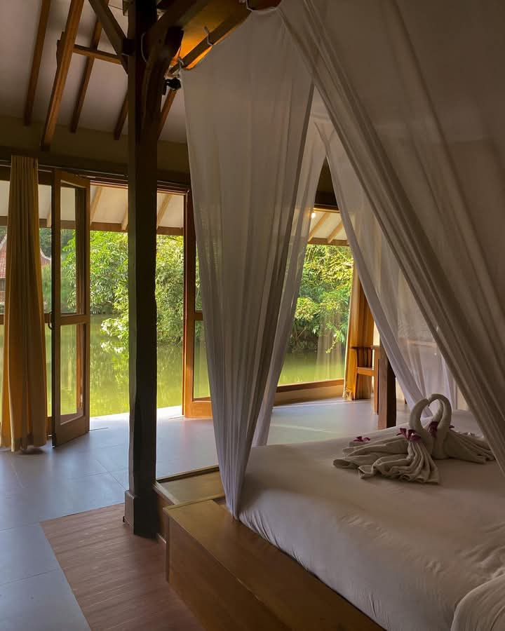
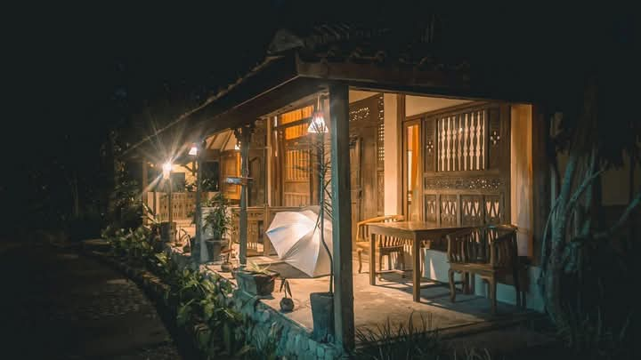

Mengapa Sapulidi
Bukan Sekadar Tempat Makan
Sapulidi adalah ruang pelarian. Setiap sudutnya dirancang untuk membawamu kembali ke pelukan alam yang damai.

6 Hektar Kemurnian Alam
Hirup udara sejuk Lembang di kawasan hijau yang luas. Dikelilingi rindangnya pepohonan, aliran air, dan hamparan sawah asri.

Mengarungi Danau Tenang
Tinggalkan kepenatan. Jelajahi danau buatan yang syahdu dengan sampan tradisional bersama orang tersayang.

Resort Unik di Atas Air
Rasakan syahdunya terbangun di dalam cottage kayu tradisional yang berdiri megah langsung di atas tenangnya danau.
Sapulidi Resort
Menginap di Tengah Alam
Kemewahan dalam kesederhanaan. Nikmati pesona cottage kayu tradisional dengan sentuhan Joglo Jawa, berkelambu puitis, dan pemandangan danau privat dari balkon Anda.

Cottage Lake View
Terbangun oleh kabut pagi yang magis. Buka pintu balkon Anda dan nikmati ketenangan air danau langsung dari depan tempat tidur.

Malam yang Sunyi & Syahdu
Lupakan kebisingan kota. Manjakan diri dalam dekapan malam Lembang yang dingin, ditemani pendar lampu hangat dan simfoni suara alam.
Makan Siang di Tengah Sawah
Hirup udara sejuk Lembang dan manjakan mata dengan hamparan sawah hijau yang membentang. Nikmati kelezatan kuliner tradisional Sunda di bawah hangatnya mentari siang yang menenangkan.
Pilih Saungmu SekarangHubungi Kami
Reservasi & Lokasi
Kunjungi kami atau hubungi tim Sapulidi langsung untuk reservasi Saung dan paket cottage.
📍 Alamat
Jl. Sersan Bajuri No.100,
Lembang, Bandung Barat,
Jawa Barat
📞 Telepon
+62 22 2786 1234
🕐 Jam Operasional
Senin – Jumat: 10.00 – 22.00
Sabtu – Minggu: 08.00 – 23.00